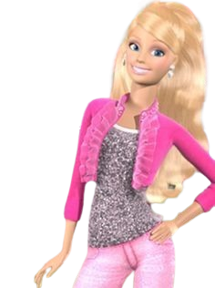

←Se vc quiser voltar...
AI MEU DEUS...
AI MEU DEUS...
Rutinha, depois de tanto te dizer o quanto eu te amo, o quanto te acho linda e muito mais,
eu acho que preciso te falar isso, eu n imagino como seria quando nós realmente
"oficializarmos" isso,
mas tenho certeza que eu sentiria medo por ser algo totalmente novo para mim, mas por vc eu enfrento
qualquer medo,
sabe eu adoraria demonstrar para os outros o meu amor por ti e poder te proteger quando falarem de
vc
e te ajudar no que vc precisasse pessoalmente, mas tudo em seu devido tempo.
por vc eu tenho toda a paciência do mundo, ent pode me pedir ajuda quando precisar viu (Sim, tô
falando no negócio do banco, eu tenho pacência vey)...
Calma, Problemas técnicos...
...
...
Interrompemos essa Declaração pra uma breve apresentação!
-Eae, Gabriel
-Oi, oi
-escutei dizer que vc estava gostando de uma menina aí, é vdd?
-Ei!, olhe como vc fala"- falo para o indivíduo que te chamou de "uma menina"-continuo...
-Ela não é "uma menina", exijo mais respeito quando falar do meu amor, ela é "A MULHER" se ligue
viu!?
-tá, tudo bem, mas quem é?
-Essa deusa grega aqui, olha:
 20.22.45_d5a42a41.jpg)
 20.22.46_327c3257.jpg)
Ai que vergonha kkkkkkk
Rute, resumindo tudo isso, Eu te amo tanto que eu acho que em palavras n seriam o suficiente pra
demonstrar o meu amor por você e com essas palavras a seguir eu termino esse meu recado:
❤️TE AMO Rute Noberto, A garota da minha vida❤️
